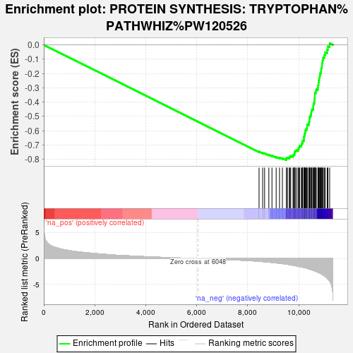
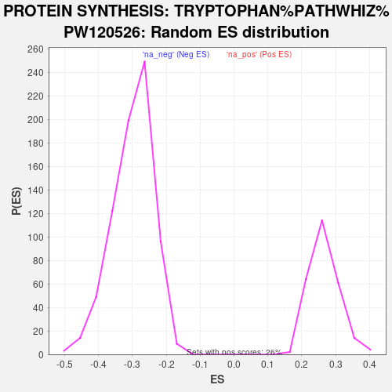

| | | Dataset | deg_con |
| Phenotype | NoPhenotypeAvailable |
| Upregulated in class | na_neg |
| GeneSet | PROTEIN SYNTHESIS: TRYPTOPHAN%PATHWHIZ%PW120526 |
| Enrichment Score (ES) | -0.8051569 |
| Normalized Enrichment Score (NES) | -2.6857064 |
| Nominal p-value | 0.0 |
| FDR q-value | 0.0 |
| FWER p-Value | 0.0 |
Table: GSEA Results Summary

Fig 1: Enrichment plot: PROTEIN SYNTHESIS: TRYPTOPHAN%PATHWHIZ%PW120526
Profile of the Running ES Score & Positions of GeneSet Members on the Rank Ordered List
| SYMBOL | RANK IN GENE LIST | RANK METRIC SCORE | RUNNING ES | CORE ENRICHMENT | | 1 | RPLP1 | 8444 | -0.531 | -0.7462 | No |
| 2 | RPS24 | 8586 | -0.589 | -0.7549 | No |
| 3 | RPL23 | 8662 | -0.622 | -0.7575 | No |
| 4 | RPS26 | 8828 | -0.691 | -0.7676 | No |
| 5 | RPL31 | 8950 | -0.749 | -0.7735 | No |
| 6 | RPL37 | 9115 | -0.846 | -0.7826 | No |
| 7 | RPS29 | 9246 | -0.918 | -0.7881 | No |
| 8 | RPS25 | 9360 | -0.982 | -0.7918 | No |
| 9 | RPL36A | 9512 | -1.076 | -0.7982 | Yes |
| 10 | RPL38 | 9517 | -1.078 | -0.7915 | Yes |
| 11 | RPL14 | 9562 | -1.114 | -0.7881 | Yes |
| 12 | RPS8 | 9632 | -1.172 | -0.7866 | Yes |
| 13 | RPL23A | 9652 | -1.190 | -0.7806 | Yes |
| 14 | UBA52 | 9686 | -1.219 | -0.7756 | Yes |
| 15 | RPS11 | 9777 | -1.304 | -0.7751 | Yes |
| 16 | RPL12 | 9789 | -1.319 | -0.7675 | Yes |
| 17 | RPS7 | 9834 | -1.364 | -0.7625 | Yes |
| 18 | RPL32 | 9835 | -1.365 | -0.7536 | Yes |
| 19 | RPL27A | 9847 | -1.373 | -0.7456 | Yes |
| 20 | RPS18 | 9864 | -1.384 | -0.7381 | Yes |
| 21 | RPS20 | 9927 | -1.452 | -0.7341 | Yes |
| 22 | RPL26 | 9988 | -1.516 | -0.7296 | Yes |
| 23 | RPL36 | 9992 | -1.519 | -0.7199 | Yes |
| 24 | RPS4X | 10025 | -1.547 | -0.7127 | Yes |
| 25 | RPL6 | 10036 | -1.560 | -0.7034 | Yes |
| 26 | RPL35A | 10106 | -1.637 | -0.6989 | Yes |
| 27 | RPL11 | 10116 | -1.648 | -0.6890 | Yes |
| 28 | RPL37A | 10146 | -1.677 | -0.6806 | Yes |
| 29 | RPS15 | 10150 | -1.680 | -0.6700 | Yes |
| 30 | RPS15A | 10201 | -1.738 | -0.6631 | Yes |
| 31 | RPL27 | 10203 | -1.739 | -0.6519 | Yes |
| 32 | RPS19 | 10206 | -1.744 | -0.6407 | Yes |
| 33 | RPL10A | 10222 | -1.760 | -0.6306 | Yes |
| 34 | RPL34 | 10236 | -1.773 | -0.6202 | Yes |
| 35 | RPLP0 | 10253 | -1.790 | -0.6099 | Yes |
| 36 | RPL28 | 10260 | -1.795 | -0.5988 | Yes |
| 37 | RPL7 | 10282 | -1.819 | -0.5888 | Yes |
| 38 | RPSA | 10323 | -1.875 | -0.5802 | Yes |
| 39 | RPS21 | 10326 | -1.876 | -0.5681 | Yes |
| 40 | RPL22 | 10327 | -1.881 | -0.5559 | Yes |
| 41 | RPS6 | 10394 | -1.986 | -0.5488 | Yes |
| 42 | RPL29 | 10407 | -1.995 | -0.5369 | Yes |
| 43 | RPL30 | 10424 | -2.026 | -0.5251 | Yes |
| 44 | RPS17 | 10425 | -2.027 | -0.5119 | Yes |
| 45 | RPLP2 | 10435 | -2.039 | -0.4994 | Yes |
| 46 | RPL7A | 10472 | -2.116 | -0.4888 | Yes |
| 47 | RPL35 | 10488 | -2.147 | -0.4762 | Yes |
| 48 | RPL19 | 10497 | -2.164 | -0.4628 | Yes |
| 49 | RPS28 | 10520 | -2.194 | -0.4505 | Yes |
| 50 | RPS23 | 10568 | -2.272 | -0.4399 | Yes |
| 51 | RPS5 | 10570 | -2.279 | -0.4251 | Yes |
| 52 | RPL4 | 10579 | -2.302 | -0.4108 | Yes |
| 53 | RPS3A | 10610 | -2.361 | -0.3981 | Yes |
| 54 | RPL5 | 10619 | -2.381 | -0.3833 | Yes |
| 55 | RPL17 | 10625 | -2.395 | -0.3682 | Yes |
| 56 | RPS3 | 10631 | -2.405 | -0.3530 | Yes |
| 57 | RPS13 | 10633 | -2.406 | -0.3374 | Yes |
| 58 | RPS14 | 10669 | -2.476 | -0.3244 | Yes |
| 59 | RPL41 | 10687 | -2.505 | -0.3096 | Yes |
| 60 | RPL39 | 10753 | -2.645 | -0.2981 | Yes |
| 61 | RPS12 | 10761 | -2.663 | -0.2814 | Yes |
| 62 | RPS16 | 10777 | -2.688 | -0.2653 | Yes |
| 63 | RPS27 | 10785 | -2.720 | -0.2482 | Yes |
| 64 | RPS2 | 10803 | -2.768 | -0.2317 | Yes |
| 65 | RPL8 | 10826 | -2.828 | -0.2152 | Yes |
| 66 | RPL18 | 10839 | -2.856 | -0.1977 | Yes |
| 67 | RPL24 | 10873 | -2.929 | -0.1815 | Yes |
| 68 | RPL15 | 10881 | -2.947 | -0.1630 | Yes |
| 69 | RPL13 | 10908 | -3.031 | -0.1456 | Yes |
| 70 | RPL13A | 10915 | -3.041 | -0.1263 | Yes |
| 71 | RPL21 | 10935 | -3.087 | -0.1079 | Yes |
| 72 | RPL3 | 10960 | -3.194 | -0.0892 | Yes |
| 73 | RPL18A | 11001 | -3.330 | -0.0711 | Yes |
| 74 | RPL10 | 11035 | -3.426 | -0.0517 | Yes |
| 75 | RPS9 | 11115 | -3.789 | -0.0341 | Yes |
| 76 | FAU | 11145 | -3.953 | -0.0109 | Yes |
| 77 | RPS10 | 11213 | -4.320 | 0.0113 | Yes |
Table: GSEA details [plain text format]

Fig 2: PROTEIN SYNTHESIS: TRYPTOPHAN%PATHWHIZ%PW120526: Random ES distribution
Gene set null distribution of ES for PROTEIN SYNTHESIS: TRYPTOPHAN%PATHWHIZ%PW120526